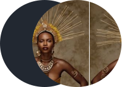

Cultura Africana
Cultura africana é o conjunto de conhecimentos, crenças, valores e
costumes dos povos que habitam o continente africano, que possui cerca
de 1,1 bilhão de pessoas. Como a África é imensa e diversa, o mais
correto é falar não de uma única cultura, mas de “culturas africanas”,
no plural.
Tradições africanas
Religião:
Cerca de 20% de toda população africana se declara adepta de alguma
religião tradicional, como a dos iorubá, grupo étnico que ocupa parte
dos territórios da Nigéria, Benin e Togo. Foi a religião do povo
iorubá, com sua adoração aos orixás, que deu origem ao candomblé no
Brasil.
Hábitos e costumes:
Dentre os povos do norte do continente, destacam-se os hábitos e
costumes tradicionalmente islâmicos, pois essa denominação religiosa é
predominante por lá. É comum nas sociedades, sobretudo a egípcia e a
marroquina, a prevalência do uso do véu para as mulheres muçulmanas e
a instituição de um modelo patriarcal de família, baseado nos costumes
do islamismo. Já os povos do sul têm uma cultura mais vasta e,
consequentemente, mais diversificada. Em alguns lugares, predomina-se
a cultura cristã, sobretudo nos que a colonização estabeleceu-se com
maior força, como a África do Sul. Já em outros, como o Congo,
Moçambique, Serra Leoa, Somália e Quênia, a prevalência do modo de
vida tribal nos interiores ainda é marcante, o que nos remete às
religiões politeístas nativas ainda existentes.